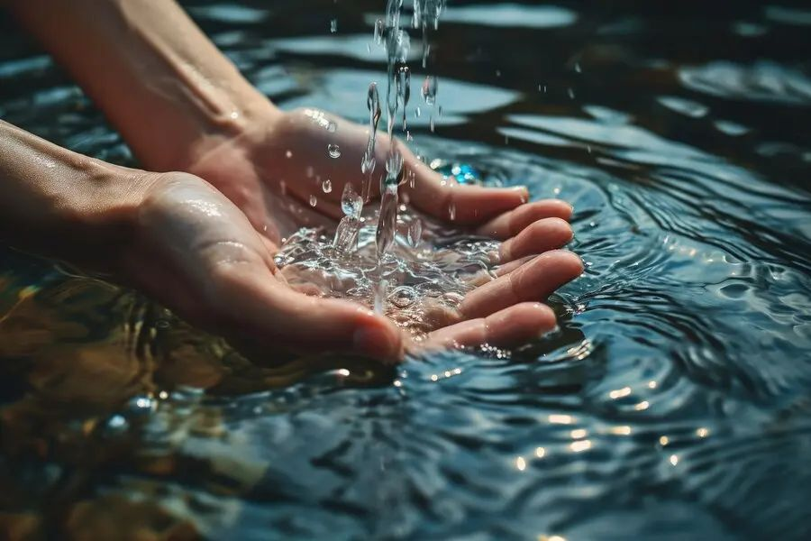

MENGENAL AIR BERSIH
Apa Itu Air Bersih?
Pelajari pengertian air bersih, ciri-cirinya, sumber air, dan pentingnya air bersih bagi kesehatan.
Pelajari Lebih LanjutApa yang Dimaksud dengan Air Bersih?
Mengenal air bersih sebagai bagian penting dari kehidupan sehari-hari.

Air Bersih untuk Kehidupan
Air bersih adalah air yang memenuhi persyaratan kualitas sesuai dengan peruntukannya sehingga dapat digunakan untuk berbagai kebutuhan.
Kualitas air perlu diperhatikan dari kondisi fisik, kimia, dan mikrobiologisnya. Air yang terlihat jernih belum tentu bebas dari mikroorganisme atau zat berbahaya.
Oleh karena itu, menjaga sumber air dan memastikan kualitasnya sangat penting untuk mendukung kesehatan manusia dan lingkungan.